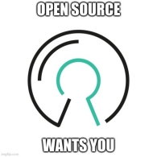

Contributing
Contributing
You can help by doing any of the following:
-
Use Vale with the style rules from the vale-at-red-hat repository, see Using Vale CLI
-
Join the Slack channel, #vale-at-red-hat, in the CoreOS workspace.
-
To show appreciation and support for Joseph Kato’s work on Vale, consider making a donation.
